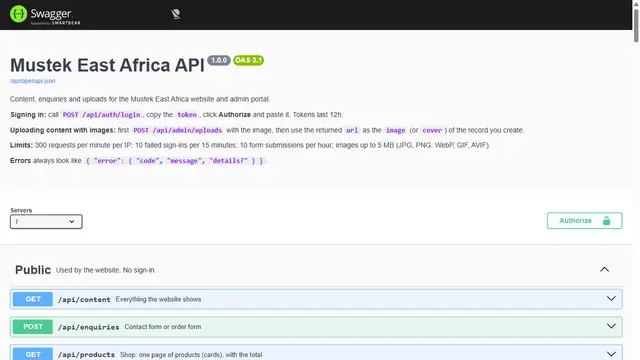
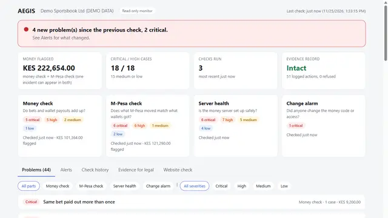
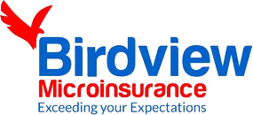
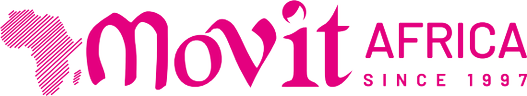

Live in productionPowering Mustek's online store
Catalogue · Orders · Careers · Security

Client · E-commerce Live
Mustek East Africa platform
API, admin back-end, security dashboard and operations for a hardware distributor's website.
Value Lets customers browse, order and request quotes around the clock, sends every order straight to sales, and keeps the business protected, monitored and recoverable.
Automated tests gate every deploy Photos 77% lighter with a WebP pipeline Consent-based personalisation, careers with CV upload
4 apps one APIThe places you love, booked privately.
Spas · Ateliers · Stays
SaaS · Booking Building
Stayvinci
Multi-tenant booking and storefront platform: API, guest PWA, business app, admin console and website in one monorepo.
Value Gives every spa, therapist and stay its own private, branded store with bookings paid straight into their own account: less phone-tag and fewer no-shows for them, and recurring platform revenue across many businesses.
Tenant isolation with PostgreSQL row-level security Four apps on one typed API 30 showcase stores for end-to-end demos
AEGIS 0 dependenciesProof, not promises.
Authorized · Read-only · Tamper-evident

Security · Tooling Open source
AEGIS
An authorization-first, read-only assessment suite and money-integrity monitor: nothing runs outside a signed scope, and every action is logged.
Value Can catch money leaks early (bets paid twice, replayed M-Pesa receipts, payouts above stake × odds) and produces evidence a lawyer can rely on.
Tamper-evident, hash-chained audit log Zero dependencies: pure Python standard library

50+ staffYour face is your timecard.
Facial recognition attendance
Insurance · Computer vision Facial Recognition Attendance
Employee attendance platform built at Birdview Microinsurance: staff check in and out by face, with identity verified by MTCNN and SSD MobileNet models.
Value Automated check-in and check-out for 50+ staff: no queues at a register, no buddy-punching, and HR gets attendance reports and analytics instead of spreadsheets.
Face detection and verification (MTCNN, SSD MobileNet) APIs for attendance logging, authentication, reporting and analytics Analytics dashboards for HR
100+ audited entriesEvery shilling, accounted for.
Transactions · Validation · Audit trail
Insurance · Finance Financial Transaction Management
Backend for internal financial transactions at Birdview Microinsurance: validated database updates and a full audit trail.
Value Fewer reconciliation errors and a clear answer to "who changed this and when" for every entry, which auditors and finance teams rely on.
Validation workflows for consistent transaction data Audit trails across 100+ transaction entries
200+ assets trackedKnow what you own.
Asset lifecycle tracking
Insurance · Operations Asset Registry
Asset lifecycle management at Birdview Microinsurance: register, assign, track and retire organisational assets.
Value Digitised tracking for 200+ assets: the company knows what it owns, where it is and who has it, cutting losses and audit time.
Lifecycle tracking from purchase to retirement Replaced manual tracking workflows
2 channels: SMS + emailEvery customer, every channel.
SMS · Email · Campaigns
Insurance · Communications Open source
Customer Care Notification System
Multi-channel platform built at Birdview Microinsurance to reach customers by SMS and email: one-off messages, bulk campaigns from CSV lists, templates and delivery tracking.
Value Cut manual communication delays: policyholders hear about payments, renewals and claims on the channel they read, thousands at a time, with proof of delivery.
Fraud Detection 0–1 risk scoreCatch fraud before it's paid.
Explainable risk scores for every claim
Insurance · ML Open source
Microinsurance Fraud Detection
Scores each insurance claim for fraud risk, explains why it was flagged, and gives analysts a dashboard to decide.
Value Can stop fraudulent claims before they're paid, and lets analysts spend their time on the risky few instead of reviewing every claim.
Plugs in front of any claims system via REST Explainable 0–1 risk score, not a black box
InsureLog 2 steps to plug inEvery claim, traceable.
Logging built for insurers
Insurance · Observability Open source
InsureLog
A plug-and-play logging toolkit for insurance microservices: one dependency gives every Spring Boot service structured events.
Value Can cut the time to answer "what happened to my claim?" from hours of digging to minutes, while keeping customers' personal data out of the logs.
Automatic personal-data masking Correlation IDs follow a customer across services Central search, export and Grafana dashboard
Follow-up Win back unfinished policies.
Personal emails, sent at scale
Insurance · Sales Open source
Policy follow-up mailer
Reads a client list (Excel or CSV) and sends each customer who started buying cover a personalised follow-up email.
Value Can turn abandoned policy applications back into paying customers, without anyone writing emails by hand.
Skips bad, missing and duplicate rows, and says why Everything configurable: nothing hard-coded

Paper forms, retired.
Signatures · QR sign-in · Auto PDFs
Training Attendance System
Replaces a paper HR attendance form: employees sign in with a drawn signature, and finished sessions become branded PDFs on a helpdesk ticket.
Value Retires paper forms and manual filing: every training session leaves an audit-ready record on its own, and HR stops chasing signatures.
QR sign-in and an offline queue PDF auto-attached to Freshservice Microsoft Entra ID single sign-on
500 items per requestReturns in minutes, not days.
Excel · Freshservice · Freshsales
Client · Sales ops Sales Returns Portal
Agents log up to 500 returned items; the system builds the Excel file, raises the Freshservice request and, on approval, creates Freshsales deals.
Value Turns hours of spreadsheet and ticket work per return into minutes, and makes sure no approved return is ever forgotten.
Webhook plus a 5-minute safety sweep: no approval missed Bulk upsert of one deal per item
ARTEX map 10 segmentsKnow the attacker's playbook.
Defences for AI-driven attacks
Security · Research Research
ARTEX defence map
A capability-by-capability breakdown of an open-source AI pentest platform, written to build detection and defence services for Kenyan banks.
Value Helps banks prepare their defences against AI-driven attacks before they ever face one.
Ten segments, from recon to evidence reporting Each with the defensive signals to watch for
BlueVision Verified land, no stress.
For buyers at home and abroad
Client · Real estate Open source
BlueVision Realtors
Website for a Kenyan land specialist helping local buyers and Kenyans abroad find and buy verified land.
Value Builds trust with local and diaspora buyers through verified listings, turning visitors into enquiries.
Blokichain Votes no one can rig.
On-chain · AI-checked
Blockchain · AI Open source
Blokichain voting
Polls and votes live on an Ethereum smart contract so results can't be tampered with; an AI service flags unusual voting patterns.
Value Results anyone can verify: useful for member votes, AGMs and any poll where trust matters.
Ask your data Questions in English, answers in seconds.
Read-only AI SQL
AI · Data Open source
Plain-English SQL route
A Next.js API route on Supabase that turns "How many orders this week?" into a read-only SQL query, using the real schema as context.
Value Lets non-technical staff answer their own data questions in seconds, safely read-only, without waiting for a developer.
freeCodeCamp Back-end foundations, certified.
Back End Development and APIs
Certification Open source
freeCodeCamp back-end projects
The five projects for the Back End Development and APIs certification: a timestamp microservice, chat app, watchlist API with JWT and more.
Value Certified foundations: the same habits of small, tested, working services that run through all my client work.